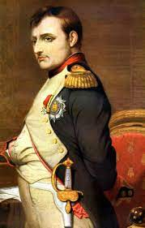
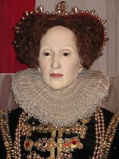
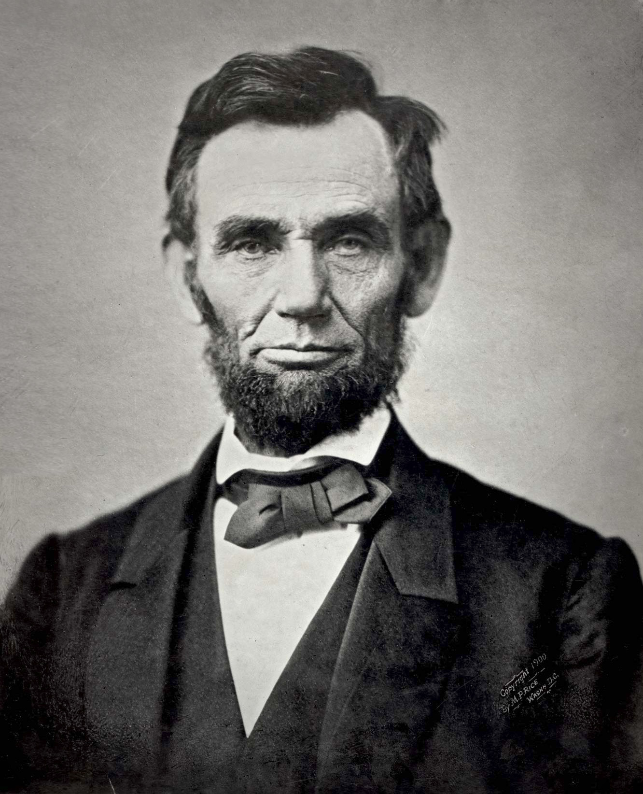
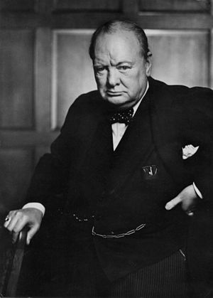
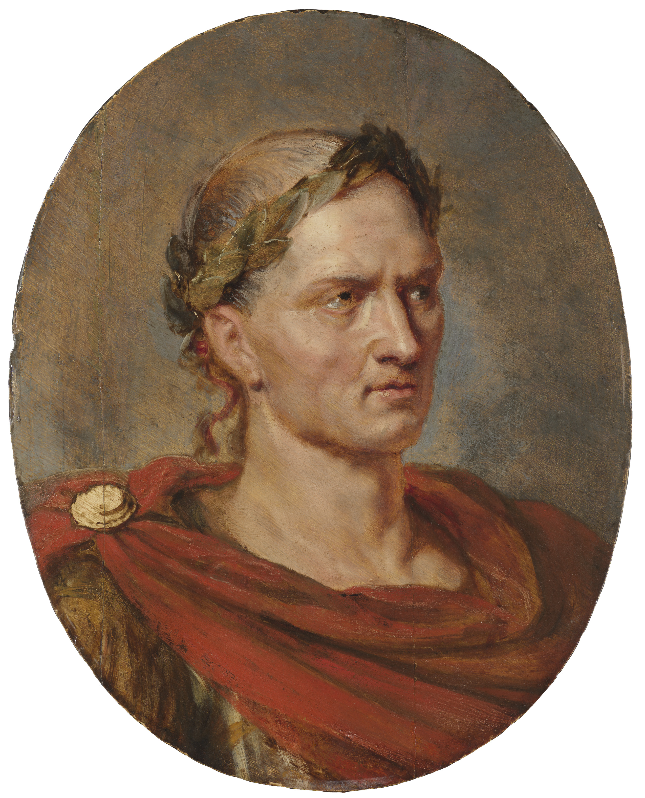

Napoleon Bonaparte dikenang atas sejumlah prestasi signifikan yang membentuk kembali Prancis dan seluruh Eropa, baik melalui reformasi internal yang langgeng maupun penaklukan militer yang luas. Prestasinya yang paling monumental sering dianggap sebagai Code Napoléon (Kode Napoleon), sebuah sistem hukum perdata komprehensif yang menjamin persamaan di mata hukum dan hak milik pribadi, yang mendasari banyak sistem hukum modern saat ini. Di dalam negeri, ia juga menstabilkan ekonomi dengan mendirikan Banque de France, mereformasi sistem pendidikan dengan pembentukan lycées, dan menciptakan birokrasi terpusat yang efisien. Di bidang militer, Napoleon menunjukkan kejeniusan strategisnya dengan memenangkan pertempuran-pertempuran penting seperti Austerlitz, yang memperluas Kekaisaran Prancis ke hampir seluruh Eropa Barat dan secara tidak langsung menyebarkan ide-ide liberal Revolusi Prancis ke wilayah-wilayah yang ditaklukkannya.

Elizabeth I membawa Inggris menuju masa keemasan setelah periode panjang konflik agama dan politik. Ia berhasil menjaga kestabilan negara dengan kebijakan moderat, sehingga rakyat dari berbagai kelompok bisa hidup lebih tenang. Pemerintahannya dikenal tenang dan mampu memulihkan kepercayaan rakyat terhadap kerajaan.
Prestasinya yang paling terkenal adalah kemenangan Inggris atas Armada Spanyol pada tahun 1588. Armada Spanyol saat itu adalah kekuatan laut terkuat di Eropa, dan keberhasilan Inggris memenangkan pertempuran ini membuat negara itu dikenal sebagai kekuatan maritim besar. Kemenangan tersebut juga mengangkat reputasi Elizabeth sebagai pemimpin tangguh.
Selain urusan politik, Elizabeth sangat mendukung perkembangan seni dan budaya. Pada masa pemerintahannya, teater dan sastra berkembang pesat, termasuk karya-karya William Shakespeare. Era ini menjadi salah satu periode paling kreatif dalam sejarah Inggris.

Abraham Lincoln terkenal karena memimpin Amerika Serikat melewati Perang Saudara dan menjaga negara tetap bersatu. Ia juga menghapus perbudakan melalui Proklamasi Emansipasi dan mendorong disahkannya Amendemen ke-13. Keputusannya ini mengubah arah sejarah Amerika dan menjadikan negara itu lebih setara. Lincoln dihormati karena keteguhan moralnya, kepemimpinan kuatnya, dan kemampuan membuat keputusan sulit di masa krisis.

Winston Churchill dikenal sebagai pemimpin Inggris yang paling berpengaruh saat Perang Dunia II. Ketika Jerman menguasai hampir seluruh Eropa, Churchill memberikan pidato-pidato penuh semangat yang membuat rakyat Inggris tetap berani dan tidak menyerah. Kemampuannya memotivasi rakyat sangat penting bagi keberlangsungan negara.
Ia juga menjadi tokoh utama dalam membangun kerja sama dengan Amerika Serikat dan Uni Soviet untuk menghadapi Jerman. Aliansi ini menjadi fondasi kemenangan Sekutu. Keputusan diplomatik Churchill terbukti sangat menentukan dalam hasil akhir perang.
Selain itu, Churchill menerapkan berbagai kebijakan untuk memperbaiki kondisi Inggris setelah perang. Ia ikut mengarahkan hubungan internasional di Eropa dan mendorong kerja sama antarnegara agar konflik besar tidak terulang. Churchill bukan hanya politisi, tetapi juga penulis yang sangat produktif. Ia menulis buku sejarah, memoar, dan pidato. Karena kualitas tulisannya, ia memenangkan Hadiah Nobel Sastra tahun 1953—prestasi yang menunjukkan betapa besar pengaruhnya dalam dunia penulisan dan sejarah.

Julius Caesar dikenal sebagai salah satu pemimpin militer terbesar Romawi. Prestasinya yang paling terkenal adalah penaklukan Galia, wilayah yang kini meliputi Prancis dan Belgia. Kemenangan ini bukan hanya memperluas kekuasaan Romawi, tetapi juga membuatnya sangat populer di kalangan rakyat dan tentara. Keahlian taktiknya membuat ia disegani lawan maupun sekutu.
Selain prestasi militer, Caesar melakukan banyak reformasi penting ketika memimpin Roma. Ia memperbaiki kalender menjadi Julian Calendar, yang menjadi dasar kalender kita sekarang. Ia juga mengatur ulang pemerintahan, membantu rakyat miskin, dan memperbaiki sistem pajak. Reformasi ini membuat Roma lebih stabil dan teratur pada masanya.